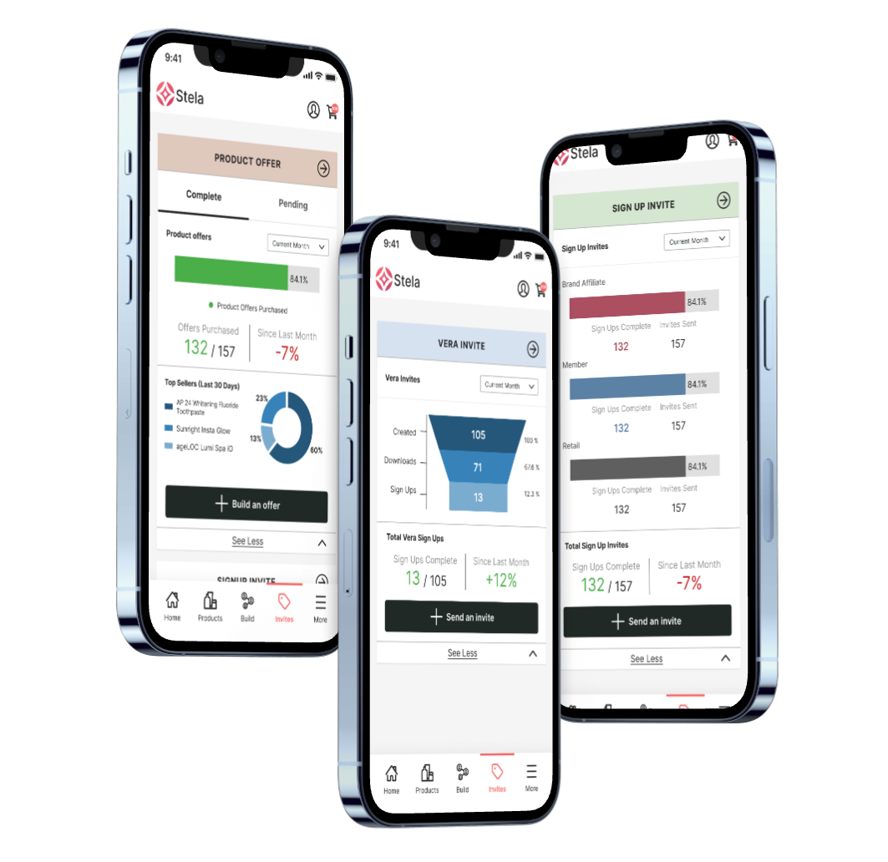
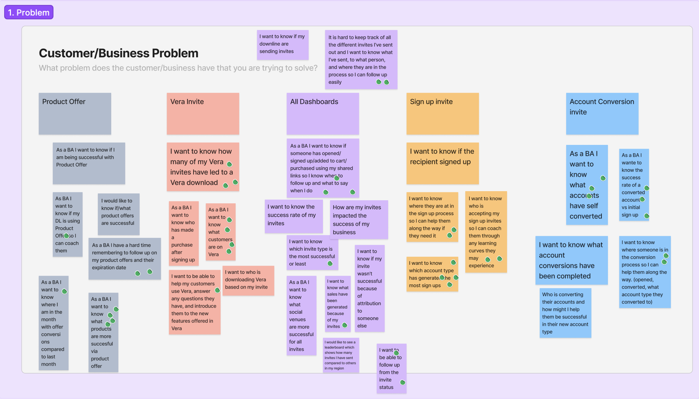
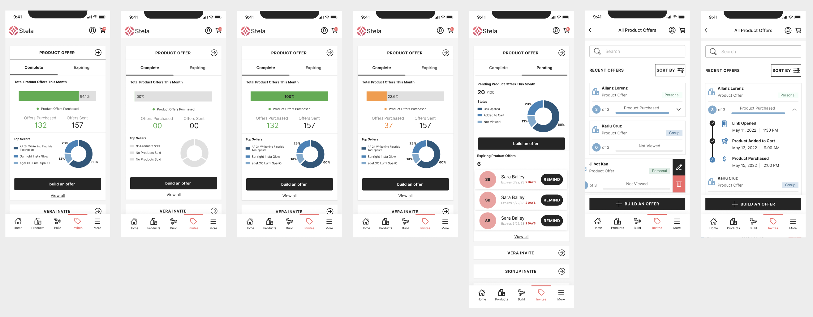
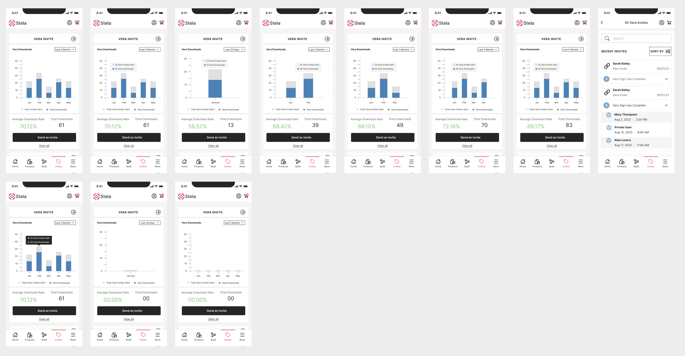
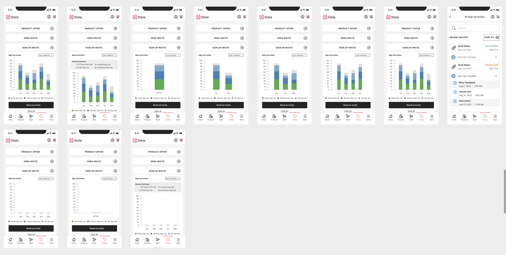
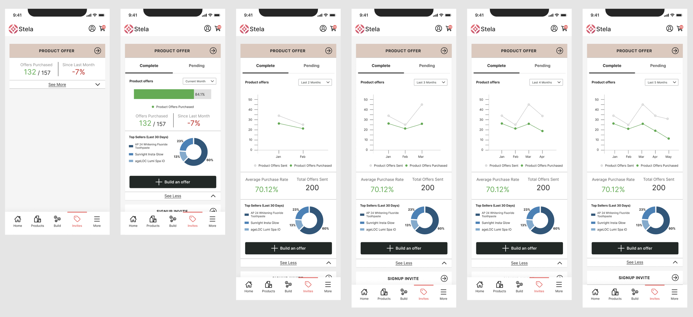
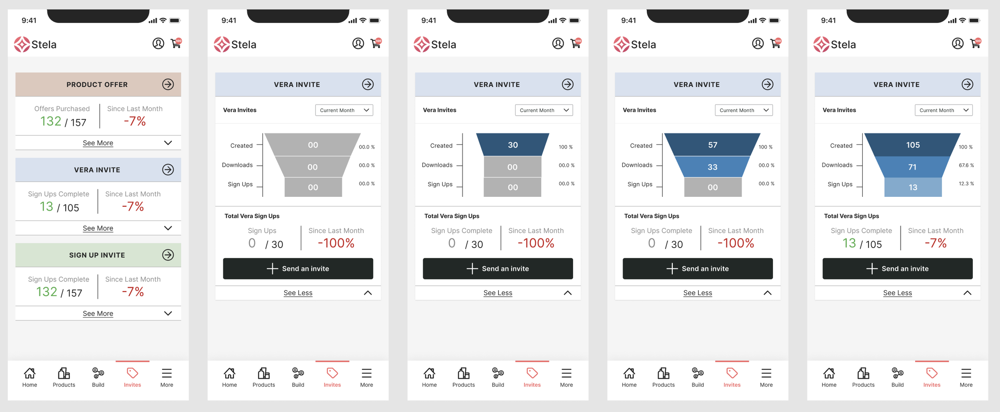
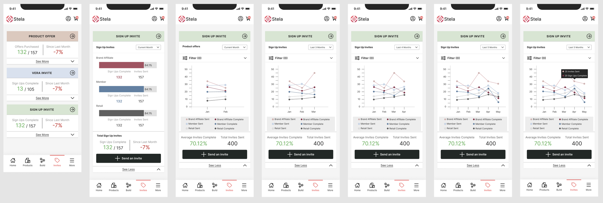

Analytics Dashboard
Designed an Analytics Dashboard that brings key metrics into a single, easy-to-understand view for Nu Skin Brand Affiliates.

Overview
Nu Skin Brand Affiliates rely on the Stela app to manage their business, but many were using spreadsheets, third-party apps, and handwritten notes to track their performance over time.
I designed an Analytics Dashboard that brings key metrics into a single, easy-to-understand view, using graphs and summaries to highlight trends in product offers, sign-up invites, and app referrals.
The result is a more intuitive way for affiliates to monitor progress and make informed business decisions without leaving the platform.
My Contributions
Data Visualization Design
Selected and designed appropriate charts and graphs for different data types and analysis needs, ensuring clarity and accuracy.
Information Architecture
Organized metrics and KPIs into logical sections, creating a mental model that felt intuitive to business users.
Interaction Design
Designed filtering, comparison, and export interactions that made advanced analysis accessible without overwhelming casual users.
Design System
Created a reusable component system for charts, cards, and controls that could scale across multiple dashboard pages.
Process
Discovery Workshop
I facilitated a discovery workshop with stakeholders, guiding the team through empathy mapping, problem definition, and ideation exercises. Together, we identified a common challenge: Brand Affiliates lacked visibility into the performance of their product offers, Vera invites, and sign-up invites, forcing them to rely on manual tracking methods.

Design & Iteration
Using insights from the workshop, I designed a suite of analytics dashboards within Stela that surfaced the metrics affiliates cared about most. Working within Nu Skin's design system, I focused on making complex business data easy to scan, compare, and act on through clear visualizations and concise summaries.



User Testing
Due to project timelines, the Product Offer Dashboard moved directly into development after internal design reviews with Product Owners and the UX team. Feedback centered on providing richer trend data, including month-over-month comparisons and conversion rates.
Study Validation
The Vera Invite and Sign-Up Invite dashboards were validated through unmoderated UserZoom studies, where participants reviewed the designs and completed follow-up questions.
Key Insights
- Users easily understood core metrics and appreciated having analytics consolidated in one place.
- Participants wanted deeper insights into individual invite recipients and their activity after receiving an invitation.
- While users valued account-type breakdowns, the stacked bar charts created confusion and made conversion rates difficult to interpret.
- Clean, simplified layouts increased confidence and made the dashboards feel approachable.
“Having more visibility to the metrics of my links is something I’ve been wanting for years. This will help me know what I need to start, stop, and continue in my business.”
Final Iteration



Outcome
Working with Product Owners and the Design team, I synthesized user feedback into a prioritized roadmap for future iterations. We recommended expanding user-level insights where data privacy allowed, improving data visualizations to increase clarity, and introducing additional filtering options for more granular analysis.
The final designs balanced user needs with business and legal constraints while delivering an analytics experience that helps Brand Affiliates measure performance, identify opportunities, and make more informed business decisions.